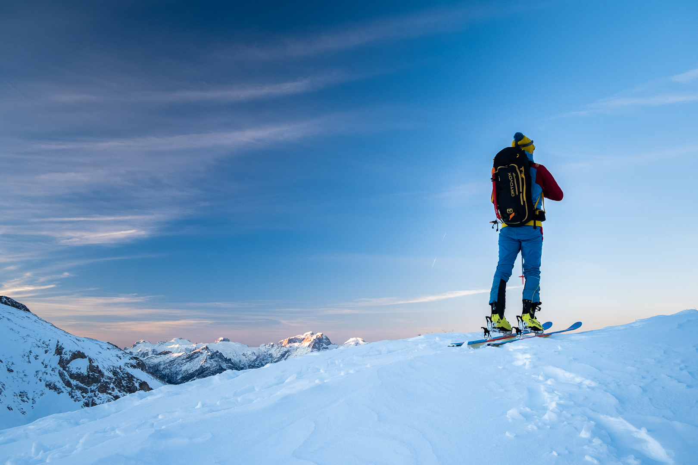

Italia
Dolomiti Superski
Cortina d’Ampezzo, Val di Fassa, Arabba, Marmolada, Alta Badia, San Martino di Castrozza, Civetta, Falcade, Passo San Pellegrino
Destinazioni selezionate in cui vale la pena tornare — dalle Dolomiti alla Patagonia.
Ogni regione ha il proprio carattere, condizioni, terreno e possibilità di allenamento.
Qui trovi le principali destinazioni in cui svolgo lezioni e attività sugli sci.
Cortina d’Ampezzo, Val di Fassa, Arabba, Marmolada, Alta Badia, San Martino di Castrozza, Civetta, Falcade, Passo San Pellegrino


Pinzolo, Madonna di Campiglio, Passo Tonale, Pejo

Courmayeur, Cervinia, La Thuile, Pila, Gressoney – Alagna

Cortina d’Ampezzo, Dobbiacco, Valle Anterselva, 3 Cime, Val Fiorentina, Val Gares, Falcade, Passo Rolle, Passo San Pellegrino, Alta Badia, Passo Lavaze
+ altre località nelle Dolomiti

Montagne patagoniche, spazi immensi ed esperienze sugli sci ben oltre le consuete destinazioni europee.
Dimmi cosa cerchi: lezioni, un certo tipo di terreno, condizioni della neve o uno stile di sci specifico.